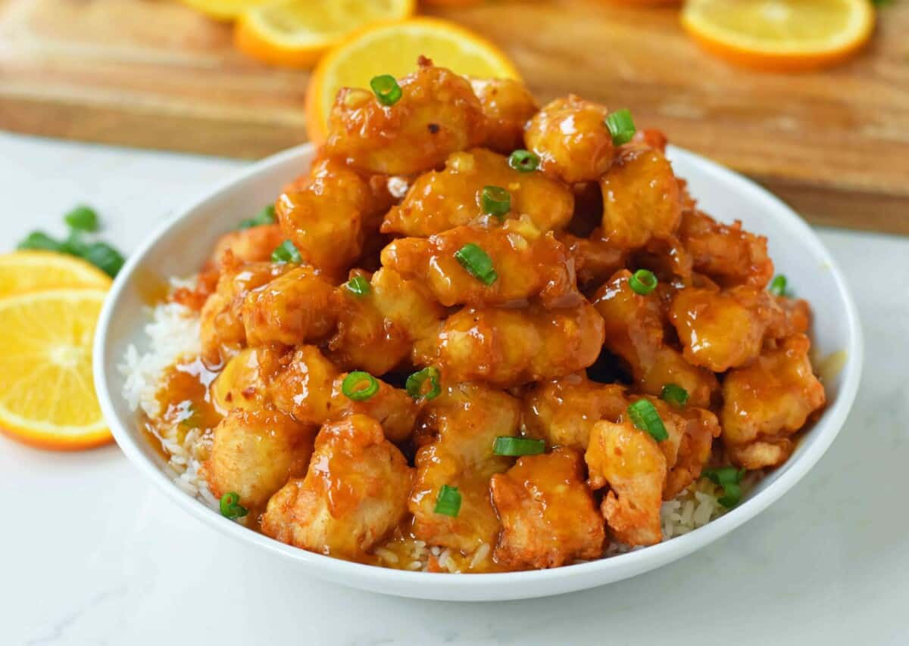

Home
Orange Chicken

Description
One of the most recognizable staples of Chinese-American food is the Orange Chicken, which features the unique mix of sweetness, sourness, and savory
tastes. This dish was invented in 1987 by Chef Andy Kao from Panda Express of Hawaii and was based on the flavor profile that was characteristic of the
Hunan province cuisine. Bite-sized pieces of boneless chicken are lightly battered, deep-fried until golden and shatteringly crisp, and then wok-tossed
in a glossy, aromatic glaze.
The defining sauce involves cooking down orange juice and peel, soy sauce, garlic, ginger, vinegar, and sugar, sometimes mixed with red chili flakes to
add a mild heat element in the background. The difference between a good orange chicken and a great one is the contrast in structure, whereby the thick
sticky glaze covers all the nooks and crannies of the crispy coating while still maintaining the juiciness of the chicken inside. Orange chicken is
usually served hot with steamed white rice and chopped scallions or sesame seeds on top.
Ingredients
Chicken
- 4 Boneless Skinless Chicken Breasts cut into bite-size pieces
- 3 Eggs whisked
- 1/3 cup Cornstarch
- 1/3 cup Flour
- Salt
- Oil for flying
Orange Chicken Sauce
- 1 cup Orange Juice
- 1/2 cup Sugar
- 2 Tablespoons Rice Vinegar or White Vinegar
- 2 Tablespoons Soy Sauce use tamari for a gluten-free dish
- 1/4 teaspoon Ginger
- 1/4 teaspoon Garlic Powder or 2 garlic cloves, finely diced
- 1/2 teaspoon Red Chili Flakes
- Orange Zest from 1 orange
- 1 Tablespoon Cornstarch
Garnish
Steps
To make orange sauce
- In a medium pot, add orange juice, sugar, vinegar, soy sauce, ginger, garlic, and red chili flakes. Heat for 3 minutes.
- In a small bowl, whisk 1 Tablespoon of cornstarch with 2 Tablespoons of water to form a paste. Add to orange sauce and whisk together. Continue to
cook for 5 minutes, until the mixture begins to thicken. Once the sauce is thickened, remove from heat and add orange zest.
To make chicken
- Place flour and cornstarch in a shallow dish or pie plate. Add a generous pinch of salt. Stir.
- Whisk eggs in shallow dish.
- Dip chicken pieces in egg mixture and then flour mixture. Place on plate.
- Heat 2 -3 inches of oil in a heavy-bottomed pot over medium-high heat. Using a thermometer, watch for it to reach 350 degrees.
- Working in batches, cook several chicken pieces at a time. Cook for 2 - 3 minutes, turning often until golden brown. Place chicken on a
paper-towel-lined plate. Repeat.
- Toss chicken with orange sauce. You may reserve some of the sauce to place on rice. Serve it with a sprinkling of green onion and orange zest, if so
desired.